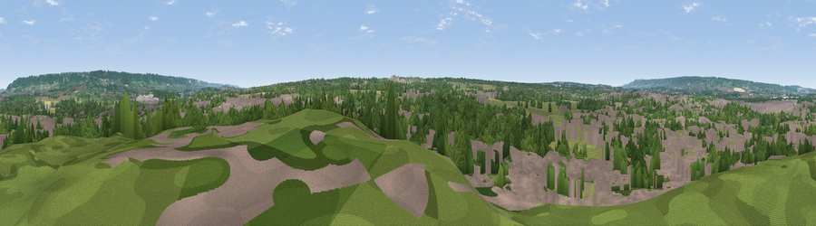

Viewpoint near Ditton
#35092 in England · top 57% of its area beats it · near DittonWhere it is
The exact computed spot (TQ 71725 57925). Click the marker for map links.
The view, rendered

A 360° render of this exact spot computed from the terrain model, tree cover and land cover — summer colours, afternoon light, calibrated against photographs of famous viewpoints. Real trees, hedges and buildings will differ in detail.
The panorama
Grey silhouette: terrain skyline in each direction (720 bearings, Earth curvature and refraction included). Dashed green: skyline with trees (+15 m) and buildings (+8 m) as obstacles. Blue strip: how far the ground is visible on each bearing.
Where the view opens
Wedge length = distance to the farthest visible ground on that bearing (vegetation-aware). Rings at 10, 25 and 50 km.
What fills the view
37% built-up · 33% woodland · 22% grassland · 6% cropland ·
Angular shares of the visible panorama (visual magnitude), not map area. Landscape diversity 0.56 (0–1 Shannon).
Key numbers
More beautiful places nearby
The staircase of upgrades: each row has a higher view potential than everything closer. Driving times are estimates from straight-line distance, calibrated against real road routing — check an actual route before setting out.
| Place | Direction | Drive | Score |
|---|---|---|---|
| Viewpoint near Bluebell Hill | ENE · 5 km | ~11 min | 61.1 |
| Bluebell Hill | NNE · 5 km | ~11 min | 64.8 |
| Viewpoint near Boxley | ENE · 5 km | ~12 min | 68.6 |
| Viewpoint near Shipbourne | WSW · 15 km | ~28 min | 69.1 |
| Viewpoint near Westwell | ESE · 28 km | ~45 min | 72.2 |
| Viewpoint near Lympne | ESE · 44 km | ~64 min | 72.6 |
| Tolsford Hill | ESE · 48 km | ~69 min | 77.9 |
| Viewpoint near Fairlight | SSE · 49 km | ~70 min | 79.0 |
51.29456, 0.46162 · source: screening · position refined by local search. Computed location — check access rights before visiting.